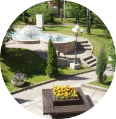

О поселке
Sterlitamak Village – камерный проект, где комфортно жить,
приятно отдыхать и находить новую энергию для движения вперед.
Поселок окружен лесопарком с одной стороны и рекой с другой. А внутри озеленен молодыми соснами.
Дом с видом на лес или на реку – выбор за Вами!
Дом с видом на лес или на реку – выбор за Вами!
Коммуникации и инфраструктура

Благоустроенная территория
Продуманное зонирование общественных зон дает возможность и взрослым,
и детям провести время за городом активно и интересно.
Дороги
До поселка идет индивидуальная асфальтированная дорога в окружении леса.
Внутри поселка дороги будут выполнены также в асфальте.
Электрика
Электрика разведена подземным способом.
Охрана и видеонаблюдение
Доступ и заезд на территорию поселка осуществляется через охрану.
Помимо этого для удобства жителей будет внедрена система распознавания номеров автомобилей.
Заказать звонок